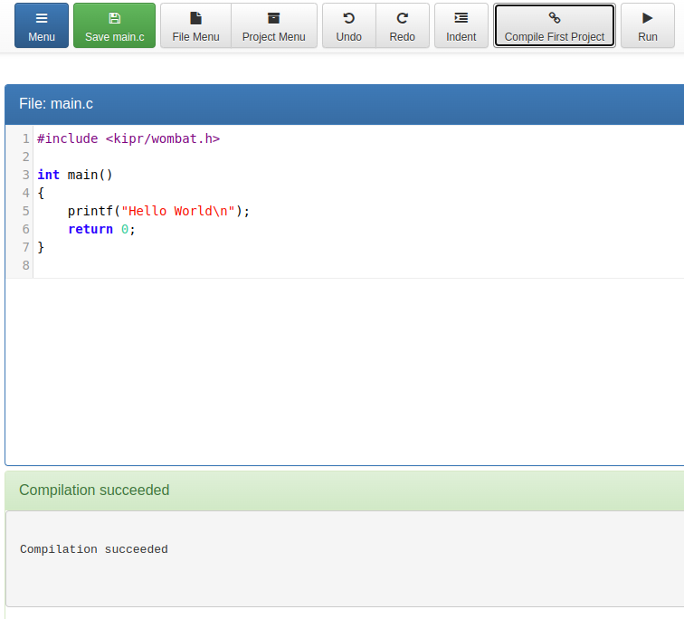

Unit 1 · Big Idea 1
Computers Follow Instructions
Student Lab · The Waypoint Navigator
Student PIN:
Overview
In this activity you will write, run, and debug a program that navigates a robot to a specific location on the Foundations field and stops. That sounds simple — and the goal is simple — but the path from idea to working program will reveal something important.
Core Insight
A robot does exactly what you tell it to do — no more, no less.
If the robot does the wrong thing, the instructions are wrong. Your job is to find out why.
By the end of this activity you will be able to:
- Define algorithm and explain why order matters in a sequence of instructions.
- Write a precise, step-by-step program that moves a robot to a target zone.
- Use a structured debugging process to find and fix errors in your code.
- Connect robot behavior to the AI literacy idea that all intelligent systems begin with instructions.
Commands You Will Use
These are built-in commands the robot already understands. You will use them inside your program. You don't have to write them — they come with the controller.
| Command | What it does |
|---|---|
motor(port, power) | Turns the motor on the given port at a power level from −100 to 100. Example: motor(0, 100) runs motor 0 forward at full power. |
msleep(ms) | Pauses the program for the given number of milliseconds (1000 ms = 1 second). The robot keeps doing whatever it was last told to do during the pause. |
ao() | “All off.” Turns every motor port off at once. Use it to make the robot stop. |
alloff() | Turns all motors off — the same idea as ao(). Either one brings the robot to a complete stop. |
Phase 1 — Activate: The Literal Robot
The Sandwich Test
Before you program a robot, it helps to feel what it is like to be one. A robot follows every instruction exactly as written. It cannot guess what you meant. It does only what you said — even when that is obviously not what you wanted.
Your Task
1. In the boxes below, write step-by-step instructions for making a peanut butter sandwich.
2. When you are done, read your instructions back out loud — and imagine following them as literally as possible.
3. Every time an instruction is unclear or could go wrong, mark it.
My sandwich instructions (write them first):
Reading them back literally, what would go wrong?
Why would the robot do something you did not intend? What does that tell you about instructions?
Phase 2 — Concept: What Is an Algorithm?
An algorithm is a precise, ordered sequence of instructions that tells a system exactly what to do. Every program you write is an algorithm. Every autonomous robot runs an algorithm.
Four Properties of a Good Algorithm
- Complete — every step needed to finish the task is included.
- Ordered — the steps happen in the right sequence.
- Precise — each step is specific enough that it can be followed without guessing.
- Correct — following the steps produces the intended result.
Inputs and Outputs
Every algorithm takes inputs (information it needs) and produces outputs (the result). For a robot navigation program:
Inputs | Motor speed · time to run · starting position of the robot |
Outputs | Robot position on the field · whether the mission scored |
In your own words: what is the difference between an algorithm and just a list of ideas?
Phase 3 — Plan
Mission 1 — Waypoint Alpha: What Must Happen?
Mission Requirement
Base Mission: A robot enters the Waypoint Alpha zone and comes to a clear, complete stop while IN THE ZONE.
Bonus Mission: The same robot subsequently returns FULLY WITHIN a starting box and stops.
Judging note: If you cannot clearly see that the robot stopped, the mission does not score.
Step 1 — Field Orientation
Before writing code, you need to know where things are. Measure or estimate these values on the real field and record them here.
| Measurement | Your Estimate | Unit |
|---|---|---|
Distance from starting box edge to Waypoint Alpha zone |
||
Width of the Waypoint Alpha zone (front to back) |
||
Distance from Waypoint Alpha zone back to starting box |
||
Motor speed we plan to use |
Step 2 — Write Your Algorithm in Plain English
Write your plan as a numbered list. Do not write code yet. Be specific enough that someone who has not seen the field could follow your instructions.
Phase A: Travel to Waypoint Alpha
Phase B: Stop in the zone
Phase C: Return to starting box (Bonus Mission)
Step 3 — Predict
Before you run anything: what do you predict will go wrong on the first try, and why?
Phase 4 — Build & Run


Starting Code Template
Type this program into your robot controller exactly as shown. Each line has a comment (after the //) that explains what it does. The comments are notes for you — the robot ignores them.
Before You Press Run — Checklist
- Your program is typed in exactly as shown, with no missing semicolons
- Robot is fully inside the starting box
- You know exactly what “success” looks like before the run starts
- You are watching to see whether the robot reaches the zone and stops
Phase 5 — Debug
Debugging is not guessing. It is a structured process of observation, hypothesis, and testing. Every time something goes wrong, use this process instead of randomly changing numbers.
Structured Debugging — Four Questions
- OBSERVE: What exactly happened? (Not “it didn't work” — be specific.)
- COMPARE: What did you expect to happen? What was the gap?
- HYPOTHESIZE: What is the most likely cause of that gap?
- TEST: Change one thing, run again, and record what changed.
Trial Log
Complete one row for every run. Never skip a row — even failed runs contain information.
| Trial | What you changed | Reached zone? | Stopped in zone? | Returned to box? | What you observed |
|---|
Describe one specific bug you found. What was the symptom? What was the cause? How did you fix it?
Phase 6 — Connect: The AI Literacy Bridge
Big Idea 1 — AI Literacy Thread
Intelligent systems require instructions before they can act.
Your robot did not decide to navigate to Waypoint Alpha. It followed the instructions you wrote. Every intelligent system — from a robot to a recommendation engine to a self-driving car — begins with someone writing instructions that tell the system what to do and how to do it. The quality of the system depends directly on the quality of those instructions.
Read each scenario below. Think it through, then write a short answer.
A navigation app tells you to turn right — into a wall. Who wrote the instructions that caused this? What probably went wrong?
A spam filter marks an important email as junk. What does this tell you about the instructions the filter was given?
In both cases above — and in your robot runs today — who is responsible for fixing the instructions? What does that mean for how we should think about AI systems?
Phase 7 — Individual Reflection
Complete this section on your own.
1. What is an algorithm? Write a definition in your own words — do not use the word “instructions.”
2. What was the most important variable in your program today? How did changing it affect the robot's behavior?
3. Precision matters in algorithms. Give one example from today where being imprecise caused a problem, and explain how you fixed it.
4. Complete this in 2–3 sentences: “Intelligent systems require instructions before they can act. This means that when an AI system makes a mistake...”
Extension Challenges
Finished early? Try one or more of these.
Extension A — Precision Tuning
- Add a third integer variable called SPEED to your program and connect it to your motor calls.
- Run 5 trials at SPEED = 30, then 5 at SPEED = 70.
- Record how speed affects your travel time. What relationship do you notice?
Extension B — The Pause Problem
- The rules say the stop must be clearly visible. What is the minimum pause value that reliably gets credit?
- Design an experiment: run 5 trials at each of three different pause values.
- What is the minimum pause you would use in a real competition run, and why?
Extension C — Sequence Matters
- What happens if you tell the robot to drive back before it ever reaches Waypoint Alpha? Predict the outcome, then test it.
- Why does sequence matter in an algorithm? Write 2–3 sentences connecting this to how AI systems are designed.
Extension D — Inputs as Numbers
- Change the two motor power numbers and the msleep number, and predict what each change will do before you run it.
- What advantage does changing a number at the top give you over changing it in many places?
Extension E — Blocks vs. Text
- If you've used a block-based tool before (Scratch, Blockly, etc.), compare it to the C you just wrote. What can you do in C that blocks make awkward? What did blocks make easier?
- Why might a real robot controller prefer a text language like C over a block-based one?
Extension F — Why a PIN?
- Every lab in this course has asked for your PIN before you could submit. That's a simple password system protecting your identity so no one else's work gets mixed up with yours.
- What's one weakness of a short numeric PIN compared to a longer password? If someone guessed your PIN, what's one change to this system that would make that harder — and how would that change actually fix the weakness you named?
When you are finished, press the button to turn in your work and save a copy.
KIPR · Botball Explorer · Unit 1 Big Idea 1 — Student Lab